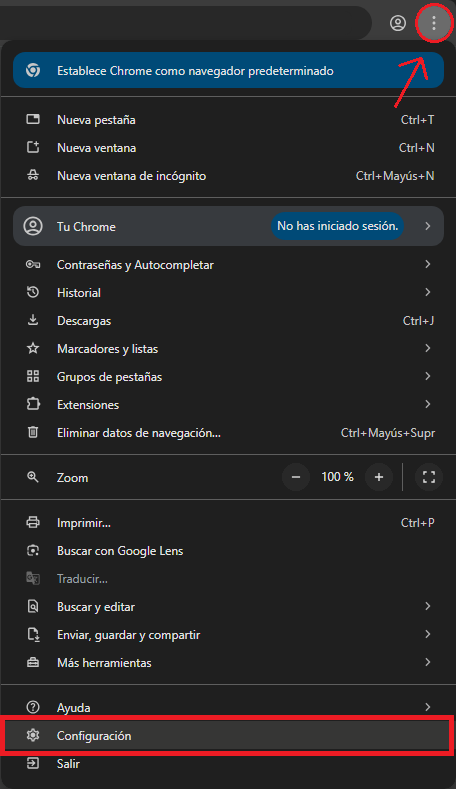
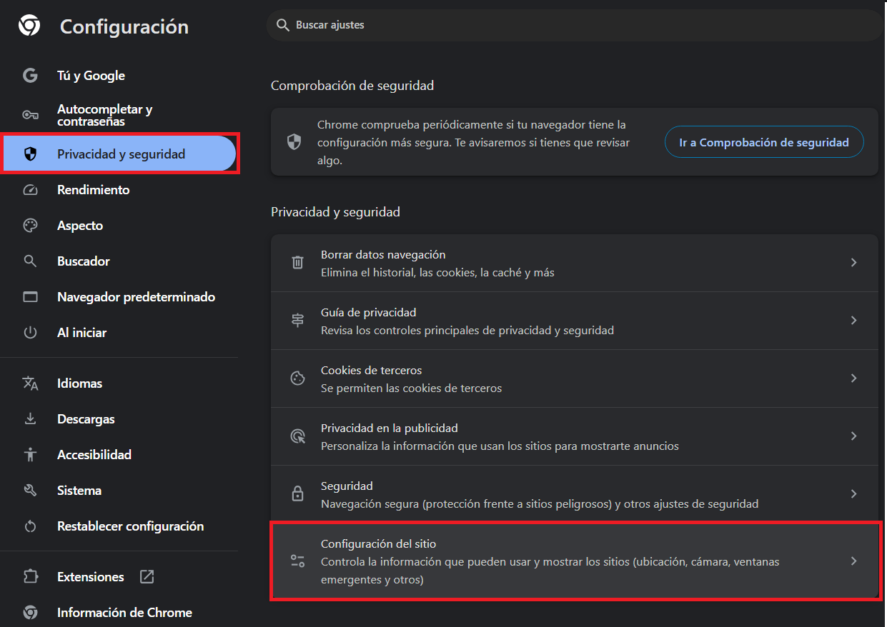
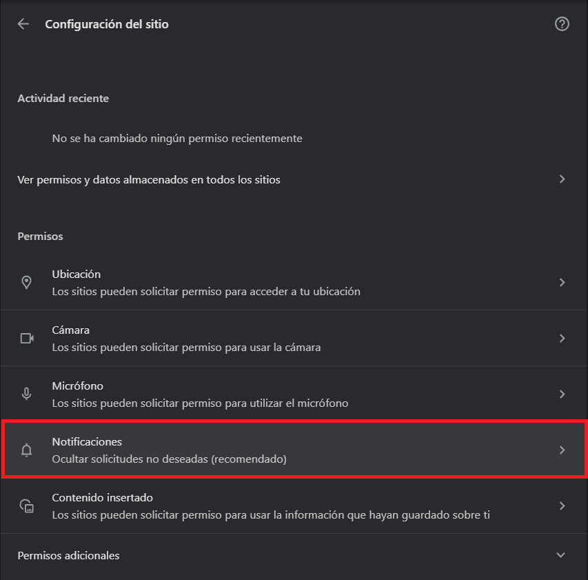
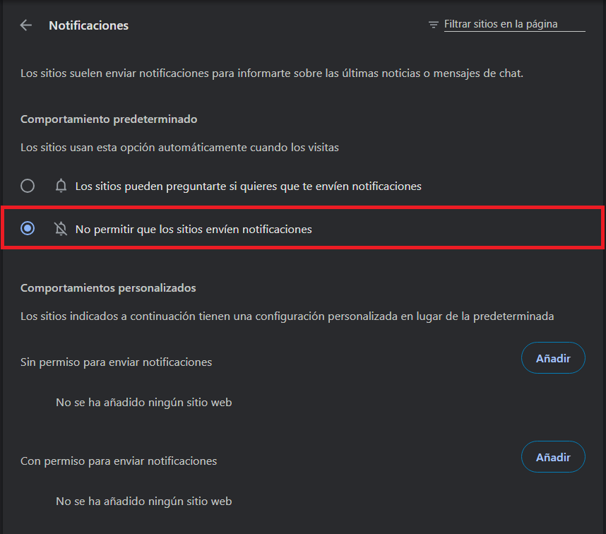
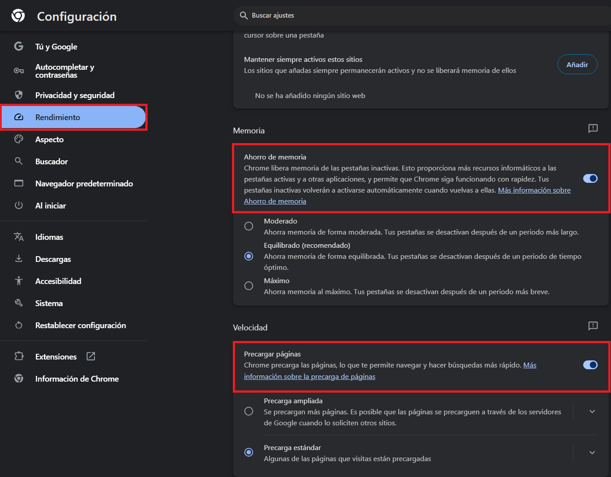
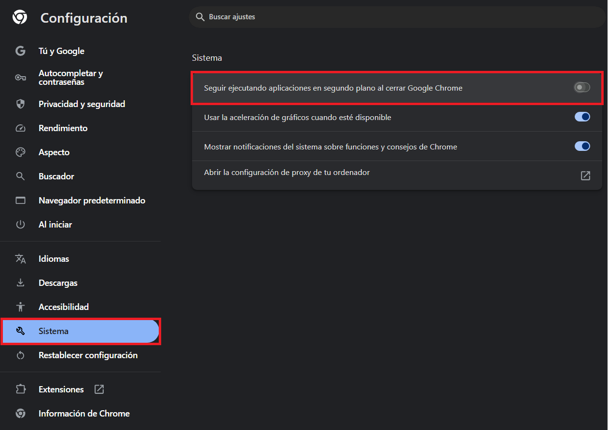

¡Mejorá el rendimiento de Google Chrome!
Google Chrome es el navegador más utilizado por los usuarios en la actualidad, incluso en PCs antiguas, por eso es que aprenderemos a optimizarlo.
Google Chrome es el navegador más utilizado por los usuarios en la actualidad, incluso en PCs antiguas, por eso es que aprenderemos a optimizarlo.
Primero debemos ir al menú de configuración. Para ello, debemos dar clic en los tres puntitos ubicados en la parte superior derecha al lado del perfil de usuario e ir a Configuración.

En este apartado desactivaremos las notificaciones de todos los sitios web que nos pueden llegar a interrumpir en caso que estemos haciendo algo en nuestra computadora.



Acá activaremos las opciones encuadradas en rojo: Ahorro de memoria y Precargar páginas.

La primera opción (Ahorro de memoria) liberará memoria RAM de pestañas que no hayamos utilizado durante cierto tiempo y la segunda opción precargará páginas para que tarden menos en cargar y así tener una mejor experiencia de navegación.
Dentro de esta sección desactivaremos la opción Seguir ejecutando aplicaciones en segundo plano al cerrar Google Chrome

Esta opción lo que hace es mantener ciertos procesos activos del navegador para acelerar los tiempos de carga al iniciarlo.
En esta ocasión lo considero recomendable por lo sencillo que es y porque siempre viene bien una optimización extra, sobretodo para aquellos que tienen una computadora poco potente.